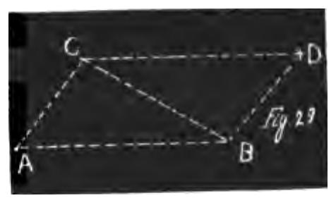
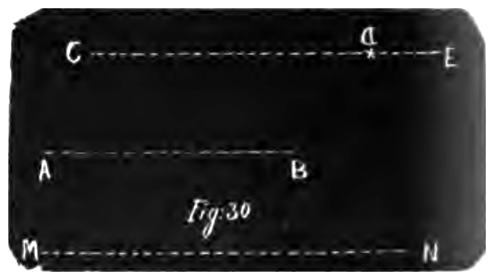

§§ 80–81: Parallels Through an External Point¶
§ 80. Problem (Fig. 29, folio 0068, p. 43). Through a given external point C, construct a virtual line \((C, D)\) parallel to \((A, B)\).
Construction: With center B and radius AC, sweep arc BC; with center C and radius AB, sweep arc CD. Let them intersect at D on the side completing parallelogram \(ABDC\). Because opposite sides are equal ( and ), \((C, D) \parallel (A, B)\) in just 2 circles (\(6 C_1 + 2 C_3\), \(S = 8\))—outperforming standard Euclidean ruler-and-compass constructions!
§ 81 (Fig. 30, folio 0069, p. 44). Extends § 80 to place a parallel segment of any specified length through \(C\).



